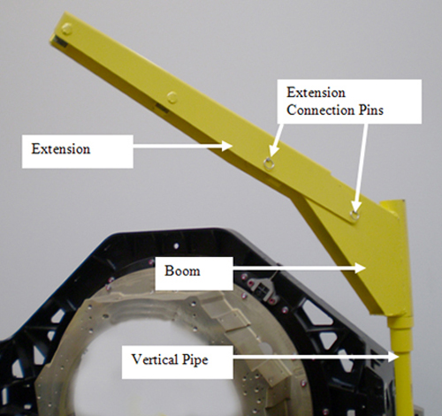
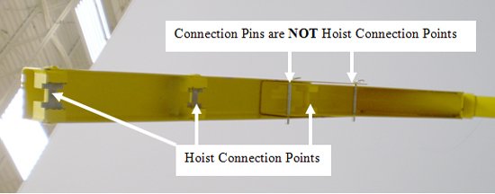
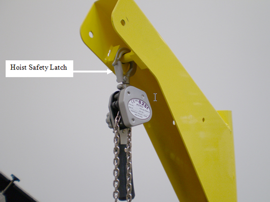
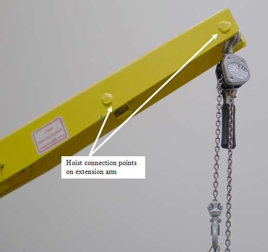

Operating Documentation
Direction 5307452-8EN, Rev# 4
Discovery CT750 HD Service Methods - Adv
Operating Documentation |
| Last Revised: | 14 August 2008 |
| Important Equipment Safety issues are highlighted in this document. | |
The system pipe and boom assembly is provided with every system. This assembly is used to aid in removal and installation of individual parts on the gantry that are too heavy to lift with one person. This assembly must only be used on replacement parts as specified in the applicable replacement procedure. Use of this assembly on any other parts may cause unsafe conditions. The lift frame is labeled with maximum load capacities by lift point.
Illustration 1 shows the three-piece lift assembled. The entire assembly fits in the same gantry pipe slot on the gantry front right corner as all previous Lightspeed systems. The pipe is significantly larger and stronger than previous Lightspeed systems. The boom and extension will not fit on the older Lightspeed pipe; parts cannot be mixed.
Illustration 1: Gantry Lift Assembled

Illustration 2 shows the only valid hoist connection points. There is one point on the boom and two points on the extension piece. All three hoist connection points are welded large pins. The two loose pins are for connection of the extension to the boom only. Ensure the connections pins are fully inserted through all parts before using the extension.
Illustration 2: Hoist Connection Points

Illustration 3 shows the connection of the hoist to the boom arm. Note that hoist has a safety latch that ensures the hoist will not come off during use.
Illustration 3: Hoist Connection on Boom Arm

Illustration 4 shows the two hoist connection points available on the extension arm.
Illustration 4: Hoist Connection Points on Extension Arm
